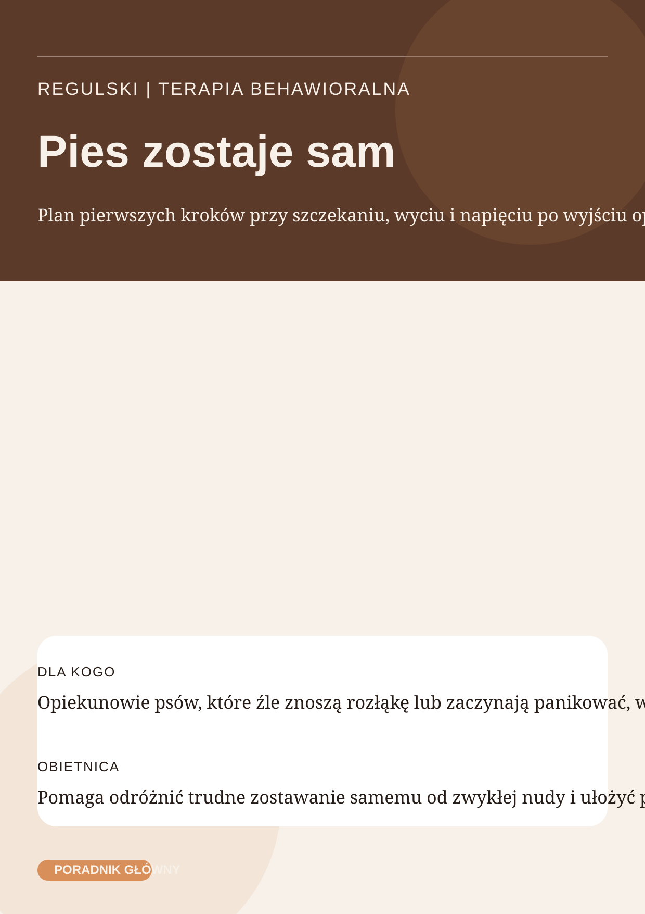

Produkt płatny
Pies zostaje sam
Plan pierwszych kroków przy szczekaniu, wyciu i napięciu po wyjściu opiekuna
Pies
szybka konsultacja 15 min lub konsultacja 30 min
Praktyczny poradnik dla opiekuna, który chce zacząć działać spokojnie, a nie losowo testować kolejne pomysły.